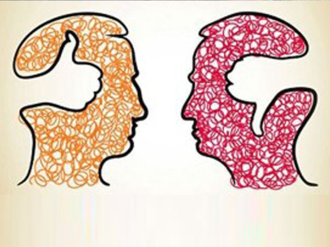

Unconscious bias to Conscious choice… a Self-exploration!
All our decisions are based on a variety of factors that we have experienced in our life, the fact is that they impact our decisions and has a tendency to overlook facts as the experiences in itself are so strong which makes us blind, hence the world calls it Unconscious. If you ask the behavioural experts they would say that knowing oneself or self-awareness is the biggest gap in Leadership evolution.
Unconscious biases are a fact of Life, all of us procreate them, off course unconsciously and takes them to our workplace. These biases can stymie diversity, recruiting, retaining, rewarding, rating and unknowingly shape our work culture. Today we look at how this affects diversity.
Diversity remains a divisive topic both at workplace and other forums of popular consciousness. While many Organisations are putting a lot of efforts and undertaking radical steps to beef up their Diversity agenda, yet too often, in our mind, it seems like organisations just implement interventions under the auspices of advancing D&I without recognising the core beliefs that underpin the case for Diversity.
There is a tendency in organisations undertaking Diversity journey, for the discourse to be underpinned by a business case rationale which is important but if seen in isolation can be limiting. They do not tackle the deep, structural problems and drift away from arguments that confront power relations, dominant ideologies or organisational goals.
Martin Luther King Jr. says: “There is nothing more dangerous than sincere ignorance and conscientious stupidity.” We are at an inflection point where we need to steer away from ignorance and engage in insightful reflection that throw light on what got us here and what we can do to move forward.
Leaders need to really ask “What is it that we are solving for through Diversity?”, Moved by bias for action, managers tend to jump directly into solutioning without checking whether they really understand the problem.
Diversity often gets into a polarised argument where people tend to get divided into “good” or “bad” and individuals having “negativity bias”. Every individual undoubtedly has biases. The paradigm with categorising good and bad is that we will “never do diversity right” because every human being holds biases of some kind or the other. It also ignores the reality that human beings do need bias to survive. Virtually everyone is biased towards something, somebody or some group. Any initiative that is driven like ‘find the bad people and fix them’ will thus not be adequate.
David Rock, CEO and founder of NeuroLeadership institute in one of his articles elucidates the perspective on why “Diversity & Inclusion trainings” spark backlash. He mentions about biases deeply entrenched in most people’s patterns of thinking – be it attitudes about race, gender, nature of autonomy or choices. He further states that “the political conflicts around political correctness and inclusiveness stem from the same cognitive issues, that makes the negative reaction to inclusion training a worthy subject of study”.
Diversity interventions in Organizations while absolutely well intended evokes negative emotion and the language makes people uncomfortable especially words like suppression, subordination, bias, feminism, racism or any other ‘isms’. It makes people defensive inhibiting them to talk productively about the subject thus limiting their ability to do anything about it.
But it is also important to note that these emotions, unconscious decisions are malleable and can be altered with self-awareness that drives into making conscious choices.
Some frames of evaluation for making conscious choices are as below:
Challenging the Holy Cow: Organizations and Societies need to create an environment which encourages dissent and keeps the conversation on Diversity functional and ongoing. We have seen a lot of views and debates shared regarding the Google’s ideological echo chamber. The google employee was spurred to write the memo on attending a Google diversity program, with a rhetoric he described as largely “shaming and ‘no, you can’t say that, that’s sexist'”. A lot of points raised in the memo were debatable. Yet for the same reason it is important to address the “shame quotient” that the individual felt when engaging in conversations on Diversity. We must encourage feedback that does not impact personhood but encourages responsibility and change. Susana Rinderle in one of her blog beautifully mentions that “once we learn to use guilt positively and eliminate shame we can continue to build skills around how to talk to each other and talk frankly and constructively about human differences like race, gender, class, age and how we’d all like to be better understood and treated”.
Getting Stuck in “Behavioural double bind”: According to Judith G Oakley a double bind is “a behavioural trait that creates a situation where a person cannot win no matter how they perform and no matter what they do. For instance, a typical double bind for women in Leadership positions is that they need to be tough and authoritative like men to be taken seriously but they also run the risk of being perceived as ‘shrews’. Jameison 1995 calls out a Femininity/Competency Bind where acting feminine is associated with being incompetent and acting competent is associated with masculine traits. Conscious choice enables organisations to accept and move beyond such behavioural double binds
Duality of the Masculine and Feminine psyche: When we speak of gender diversity in particular, we often tie ourselves in arguments of masculinity and femininity that are entrenched in frozen beliefs about gender roles and gender differences. Work undertaken by one of India’s best Leadership & Organizational expert’s Ashok Malhotra in the field of understanding gender diversity especially at the workplace, contends that gracing Masculine and Feminine principles is necessary at individual and collective levels as is understanding and respecting the commonalities and differences of the two genders. Through a matrix he contrasts the psyche and posits that gender is not just about men and women but equally about masculine and feminine processes. These approaches determine an individual’s style and managerial implications. Ashok Malhotra along with Sarbari Gomes is known for conducting a very unique diversity program which gets us to think about this topic in a totally different and unique way and makes us take conscious choices.
Paying Attention to the triggers: Implicit biases often run contrary to our conscious beliefs. To overcome it, we need to consciously break the rapid and automatic metal associations between people, ideas and objects and our attitudes. A quick test to see if the trigger is on, is to evaluate the process of decision making by changing key words that show our ownership. For e.g. suppose in a selection process if you find that you have no good woman talent, write down that decision – ‘I am hiring this man as I cannot find a capable woman’. Now in this statement replace the word cannot with I wouldn’t. If that statement feels wrong, revisit your method to selection (or any other process). What this does is it moves us out of our state of powerlessness.
Building Inclusive Leadership Levers: Organizations that harness both uniqueness and belongingness for their employees are likely to generate greater financial returns and drive practices that are transformative and innovative. An important building block in the specs of building Culture is Leadership. Through a survey of employees from 156 of the 250 organisations on the Forbes “America’s best employer for diversity” it has been identified that Inclusive Leadership is highly correlated with Inclusive Culture. According to Mike Fetzer from Culture Factors, there are five facets of inclusive Leadership which we would like to refer as 1S4E framework. These facets are Supportive, Equitable, Entrusting, Encouraging and Enabling. Ramping Diversity interventions without seeding measures or sensibilities on inclusion is bound to do more harm and have a boomerang effect. Inclusive Leadership is not inherent but acquired through demonstrating behaviours akin to the above facets. Inclusive Leadership is an ongoing journey and the first step towards building it is undertaking candid evaluation or feedback of one self that provides data of how others perceive one’s inclusive Leadership skills (or lack thereof). Identifying targeted areas of development and realising an action plan that includes personal and professional interventions will be able to bring about shifts that are instrumental in shaping the culture on Inclusion.
Diversity Coaching: One of the key ways to help Leaders unfold their blind spots on diversity and facilitate them to make conscious choices are to support them with Diversity coaching which makes them realize lasting and meaningful change in their behaviours as the process is deeply introspective self-discovery and a confidential, safe and supportive learning zone where he/she can freely examine, explore and resolve their unique blind spots, fears, inhibitions and challenges in order to embrace diversity and to enable bias-free workplace decision making. Moreover, a Coach would support them in their development plan by giving them the right course corrections, give feedback and help them build new sustained practices to transform.
Diversity is a technique, not an end. It needs to be balanced against many other considerations, such as the clustering of skills and the evolving needs of the Organization. In deed the saying by scholars is true “We need much more diversity of thought on the subject of “diversity”.
Co-authored by Zainab Electricwala and Alaukika Singh